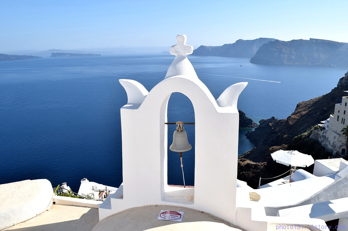

그 중에서 하얀 벽과 파란 지붕 건물로 유명한 산토리니 섬을 추천합니다.
한국에서 아테네로 가는 직항이 없어서 최소 비행기를 2번 타야하지만 그래도 추천합니다.
산토리니는 화산섬이고 하얀 건물과 바다가 조화를 이루어 사진 찍을 곳이 많습니다. 이아 마을에 하얀 건물이 가장 많습니다.
산토리니의 5개 마을 중에서 이아 마을이 제일 아름답습니다. 이아 마을에 가기 전에 다른 마을에 오래 있었다가 후회했습니다. 산토리니에 잠깐 머무르면 이아 마을에 제일 먼저 가고 시간을 많이 할당하시길 추천합니다.
동화 속에 나올 것 같은 건물이 많아 사진 찍을 곳이 많습니다. 골목 바닥마저 고급스러워서 관광에 최적화된 마을입니다.
산토리니가 세계 3대 석양이라는 이야기를 듣고 석양을 보려고 한참 기다려 좋은 자리에서 구경했습니다. 세계3대 석양은 과장된 소문이었습니다.
코타키나발루에서 보았던 석양이 100배 더 아름답습니다. 인터넷에 도는 석양 사진이 실제 석양보다 근사하게 보입니다.
그러나 이아 마을의 건물 하나하나가 근사하고 그리스 요리도 맛있어서 이아 마을에서 일주일 머물러도 될 것 같습니다 .
산토리니는 화산 섬이라 레드비치 등 해변가가 많지만 특출나게 아름다운 해변가는 없습니다.
바닷물 색도 평범합니다. 하얀 건물이 독보적이어서 관광객이 많이 찾는 것 같습니다.
